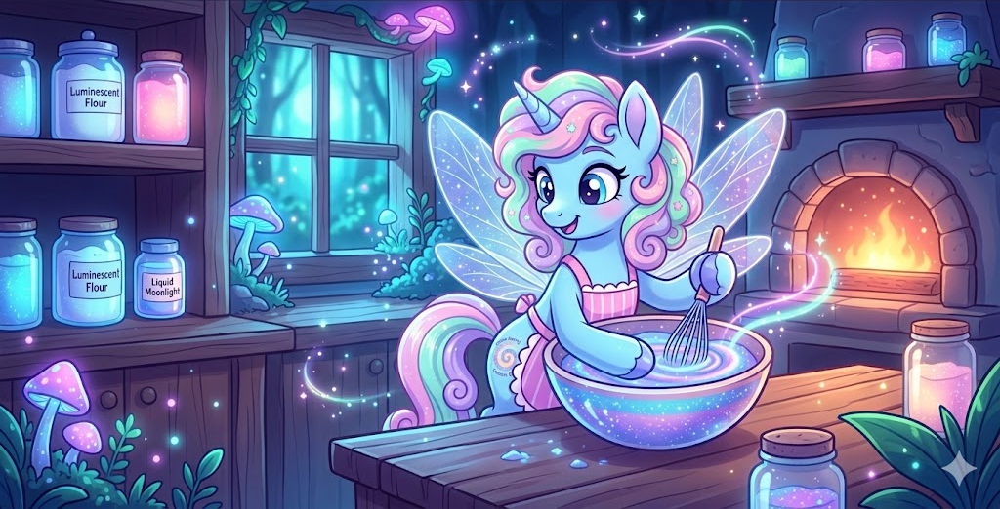
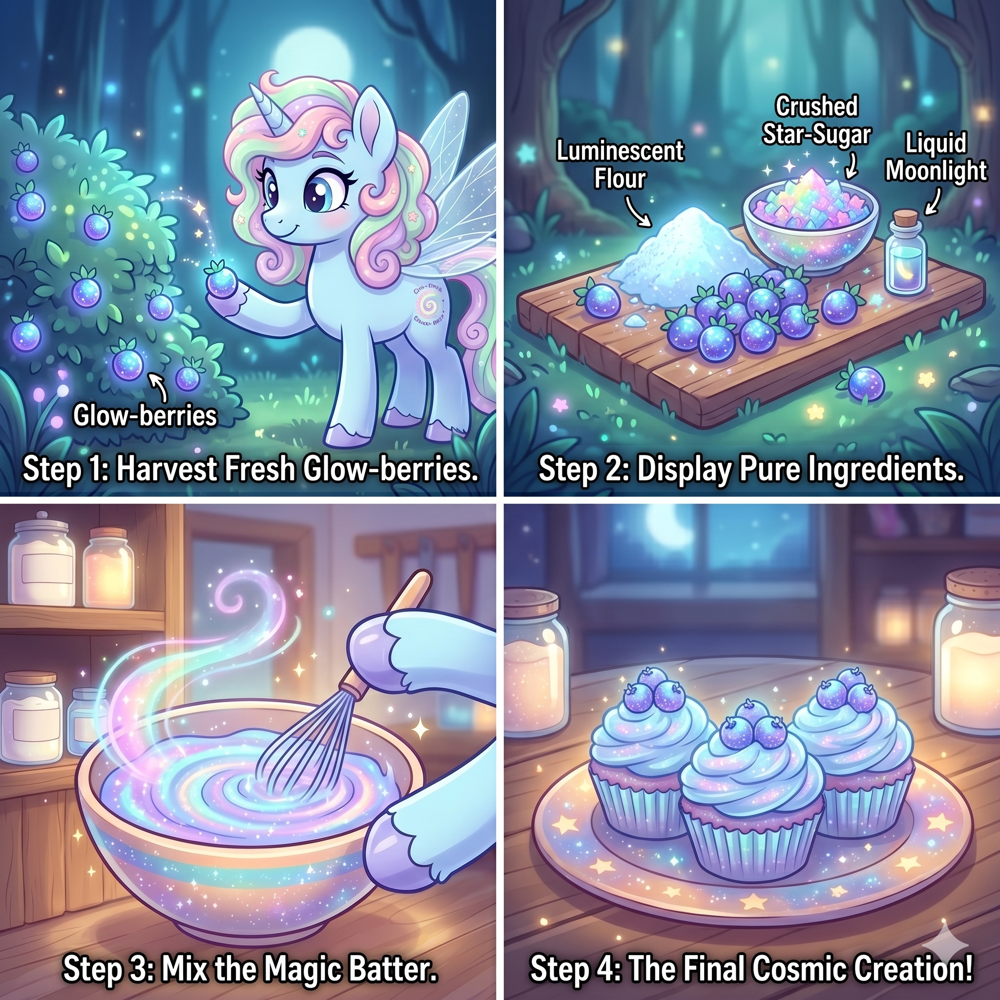

Deep within the Neon-Glade Forest, Sprinklesnap the Pixie-Pony is whipping up a fresh batch of Cosmic Cakes! These treats naturally glow under the moonlight and taste like sweet stardust.
Follow these steps carefully to brew your own kitchen magic!
🌳 The Story of The Glowing Oven Bakery 🌳
The Glowing Oven Bakery didn't start in a bustling city—it began with a tiny stone hearth nestled deep under the canopy of the Neon-Glade Forest. Founded by Sprinklesnap after years of exploring natural, light-bearing flora, the bakery was built on a simple philosophy: food should nourish your spirit just as much as your body.
100% Foraged
Every berry, crystal, and grain of flour is responsibly hand-gathered right here in the forest.
Positive Energy
We strictly avoid heavy artificial ingredients, ensuring every bite leaves you feeling energized and bright.
Today, Sprinklesnap works alongside a small, dedicated team of forest creatures who help sift luminescent flour, bottle pure liquid moonlight, and pack up fresh pastries for travelers journeying through the glade. Whether you visit us online or follow our recipes from afar, we are so glad to have you as part of our baking family!
1. Gather the Ingredients

2. Choose Your Ultimate Magic Topping (Pick One)
📬 Get in Touch with Sprinklesnap
Want to book a baking workshop, request a custom catering order, or send some friendly fan mail? Drop a message!
The Glowing Oven Bakery
Plot 7, Luminescent Pathway
The Neon-Glade Forest
✨ Follow Sprinklesnap's Culinary Journey ✨
Catch daily kitchen magic, live foraging streams, and wholesome baking tips on her official channels!